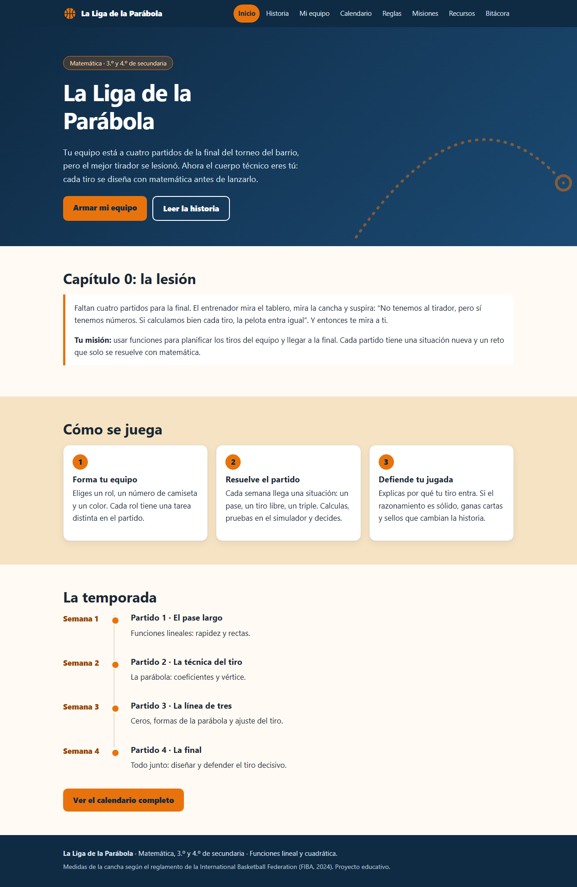
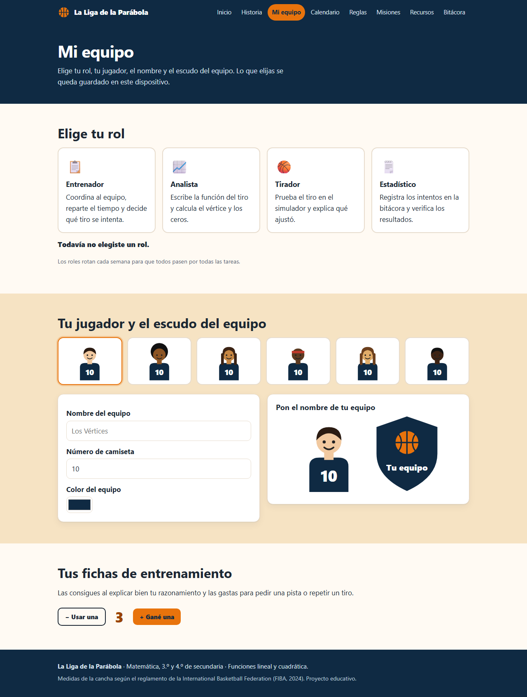
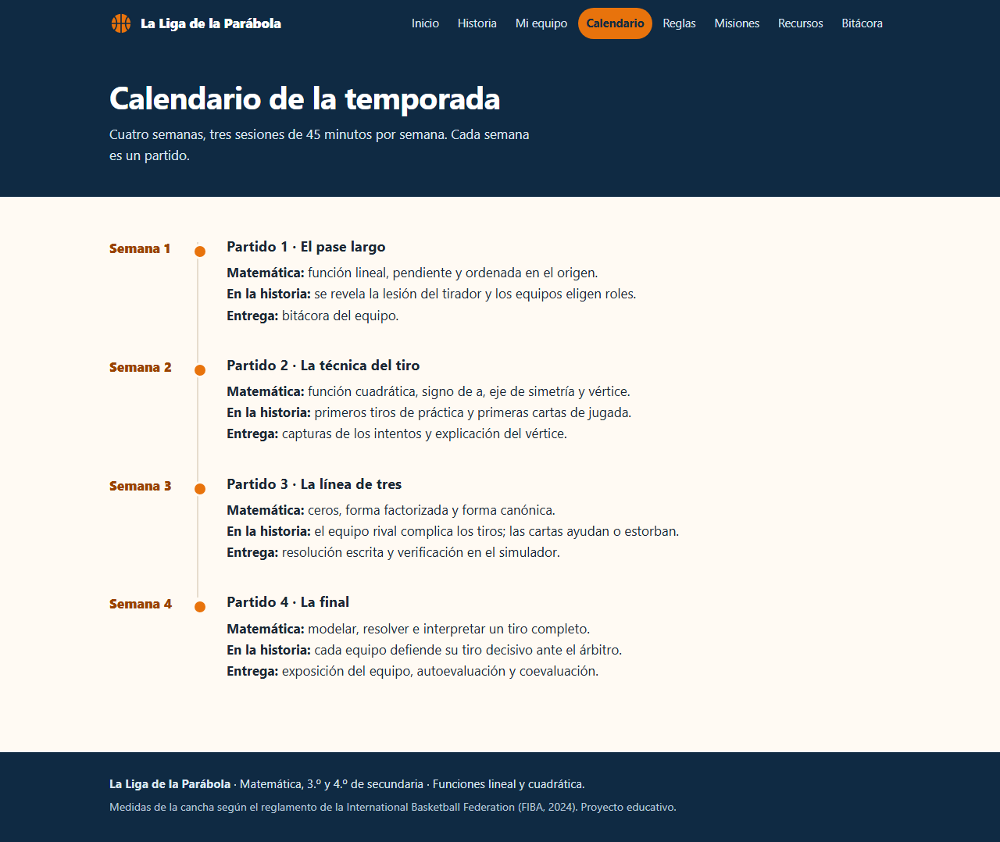
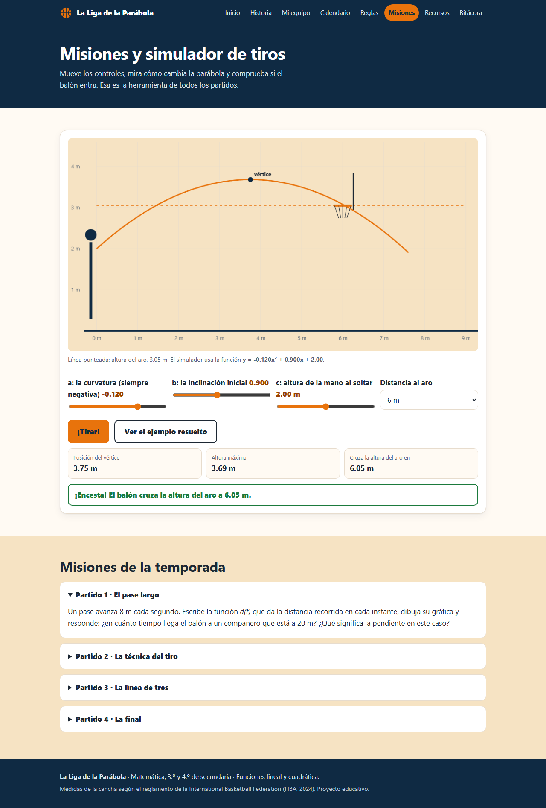
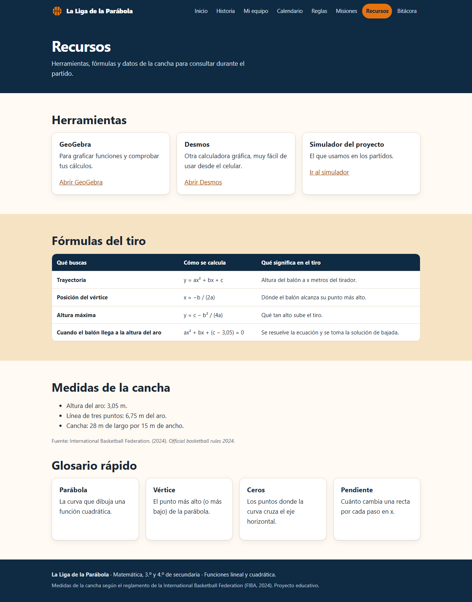

Portafolio de evidencias
Lo que hice en el curso de creación de contenidos, mobile learning y gamificación.
Asignatura: Creación de Contenidos, Mobile Learning y Gamificación en el Aula

Introducción
Soy Leonel Díaz, profesor de matemáticas e informática en secundaria. Este portafolio junta los trabajos que hice en el curso: un videotutorial sobre cómo crear una actividad con ayuda de la IA y un proyecto de gamificación para enseñar funciones.
Lo armé para tener todo en un solo lugar y contar cómo fue hacerlo: qué me salió bien, qué me costó y qué cambiaría. Cada evidencia tiene su reflexión.
Con el menú de arriba puedes ir directo a cada parte.
Mis evidencias de aprendizaje
| Tema | Evidencia | Formato |
|---|---|---|
| Creación de contenidos digitales | Videotutorial: actividad de geometría con una imagen creada con IA | Video, imágenes, PDF, enlaces |
| Planificación de un reto gamificado | La Liga de la Parábola: gamificación con narrativa | Sitio web, imágenes, PDF |
Evidencia 1 · Videotutorial con ayuda de la IA
Tema: Creación de contenidos digitales.
Hice una actividad de geometría para segundo de ESO con una imagen de un patio escolar generada con IA en Ideogram. Los alumnos clasifican los objetos por su forma y calculan perímetros, áreas y la longitud de una circunferencia. Después grabé un videotutorial para que otros profesores vean el proceso paso a paso.
Ver en YouTube Enunciado para el alumno Entrega completa (PDF)
¿Qué aprendí haciendo esta actividad?
Aprendí que con la IA el primer resultado casi nunca sirve. Tuve que ir corrigiendo el prompt hasta que en el patio aparecieron todas las formas que necesitaba: la fuente, el depósito, el banco cúbico, el cono. También aprendí a escribir un guion con tiempos antes de grabar, a editar en Clipchamp, a subir el video a YouTube y a citar Ideogram en APA.
¿Qué desafíos enfrenté y cómo los superé?
Lo más difícil fue que la IA no sabe escribir números. Cuando le pedía las medidas dentro de la imagen, salían mal. Lo resolví pidiendo la imagen sin textos ni números y poniendo las medidas en el enunciado. Así el alumno calcula con los datos escritos y la imagen solo le sirve para reconocer las formas.
¿Cómo puedo aplicar este recurso en un contexto educativo real?
La actividad la puedo usar tal cual con segundo de ESO para repasar figuras, perímetros y áreas. El video lo pensé para otros profesores: les muestra el proceso completo y les recuerda dos cosas que yo también hice, revisar lo que genera la IA y citarla.
Reflexión de 166 palabras.
Evidencia 2 · La Liga de la Parábola
Tema: Planificación de un reto gamificado.
Es un proyecto de gamificación con historia para enseñar funciones lineales y cuadráticas en 3.º y 4.º de secundaria. Los estudiantes son el cuerpo técnico de un equipo de baloncesto que llega a la final del torneo del barrio sin su mejor tirador, y cada tiro se calcula con matemática antes de lanzarlo. Son cuatro partidos, uno por semana, con roles, cartas de jugada, fichas de entrenamiento, sellos y un simulador de tiros. Las medidas de la cancha son las del reglamento de la FIBA (2024).
Abrir el sitio del proyecto Planificación completa (PDF)








¿Qué aprendí haciendo esta actividad?
Aprendí que gamificar no es repartir puntos e insignias. Lo que sostiene el proyecto es la historia: un equipo de barrio a cuatro partidos de la final y sin su mejor tirador. Con esa historia, calcular una parábola deja de ser un ejercicio y se vuelve decidir si el balón entra o no. También aprendí a montar todo en un sitio web que los estudiantes pueden abrir desde el celular, con un simulador donde cambian los coeficientes y ven el tiro.
¿Qué desafíos enfrenté y cómo los superé?
Mi reto fue que las cartas, los roles, las fichas y los sellos no se sintieran como premios pegados a la fuerza. Los metí dentro de la historia: las cartas son las jugadas del cuaderno del entrenador y los sellos son los trofeos de la temporada. Además pensé en un grupo que se distrae y no entrega tareas, por eso cada semana cierra con un partido y un resultado claro.
¿Cómo puedo aplicar este recurso en un contexto educativo real?
Lo puedo usar con 3.º y 4.º de secundaria durante un mes, con tres sesiones de 45 minutos por semana. La rúbrica la compartiría desde el primer día para que sepan cómo se evalúa.
Reflexión de 185 palabras.
Habilidades digitales
| Aplicación o recurso | Qué hice con ella | Utilidad en el aprendizaje |
|---|---|---|
| Ideogram | Generé la imagen del patio escolar con un prompt. | Tener imágenes propias para mis actividades. |
| Google Docs | Escribí el enunciado y lo compartí con un enlace. | Pasar la actividad a estudiantes y a otros profesores. |
| Grabadora de pantalla de Windows y Clipchamp | Grabé y edité el videotutorial. | Explicar un proceso en video. |
| YouTube | Publiqué el videotutorial. | Compartir el video con un enlace que no cambia. |
| Word | Usé estilos, índices, referencias cruzadas y citas. | Mantener ordenados los documentos largos y citar las fuentes. |
| GitHub Pages | Publiqué La Liga de la Parábola en ocho páginas. | Darle a los estudiantes un solo sitio con la historia, las reglas y las misiones. |
| Simulador de tiros y GeoGebra | Probé parábolas cambiando los coeficientes. | Ver el resultado al instante y corregir sin miedo a equivocarse. |
| Canva | Diseñé las cartas de jugada. | Hacer los materiales impresos del juego. |
Filosofía educativa
Creo que se aprende más cuando el estudiante parte de algo que ya conoce y quiere resolver. Me gusta empezar la clase con un problema real, un juego o unos datos, dejar que prueben, que se equivoquen y que encuentren patrones, y solo después ponerle nombre a los métodos. Mi trabajo es preparar ese punto de partida y acompañar. El de ellos es hacer el camino.
En mis clases de matemáticas, estudiantes míos presentaron ante el consejo de la ciudad un modelo de tráfico que ellos mismos construyeron. Eso me enseñó que lo que aprenden puede servir fuera del salón, y quiero que pase con frecuencia.
Uso la tecnología cuando mejora algo concreto: me deja hacer mis propios recursos, dar respuesta inmediata con un simulador o llevar un problema real al aula. La IA me ahorra tiempo, pero lo que genera lo reviso yo, y cito lo que uso.
Mi meta ahora es seguir creando este tipo de materiales, con historias, simuladores y videos cortos que le den al estudiante una razón para trabajar, y ayudar a otros profesores a hacerlos también.
Referencias
- Anthropic. (2026). Claude [Modelo de lenguaje de gran tamaño]. https://claude.ai
- Deterding, S., Dixon, D., Khaled, R. y Nacke, L. (2011). From game design elements to gamefulness: Defining “gamification”. En Proceedings of the 15th International Academic MindTrek Conference (pp. 9-15). ACM. https://doi.org/10.1145/2181037.2181040
- Ideogram. (2026). Ideogram (versión 4.5) [Generador de imágenes con inteligencia artificial]. https://ideogram.ai
- International Basketball Federation. (2024). Official basketball rules 2024. https://assets.fiba.basketball/image/upload/documents-corporate-fiba-official-rules-2024-v10.pdf
- Kapp, K. M. (2012). The gamification of learning and instruction: Game-based methods and strategies for training and education. Pfeiffer.
- Ryan, R. M. y Deci, E. L. (2000). Self-determination theory and the facilitation of intrinsic motivation, social development, and well-being. American Psychologist, 55(1), 68-78. https://doi.org/10.1037/0003-066X.55.1.68
- Werbach, K. y Hunter, D. (2012). For the win: How game thinking can revolutionize your business. Wharton Digital Press.